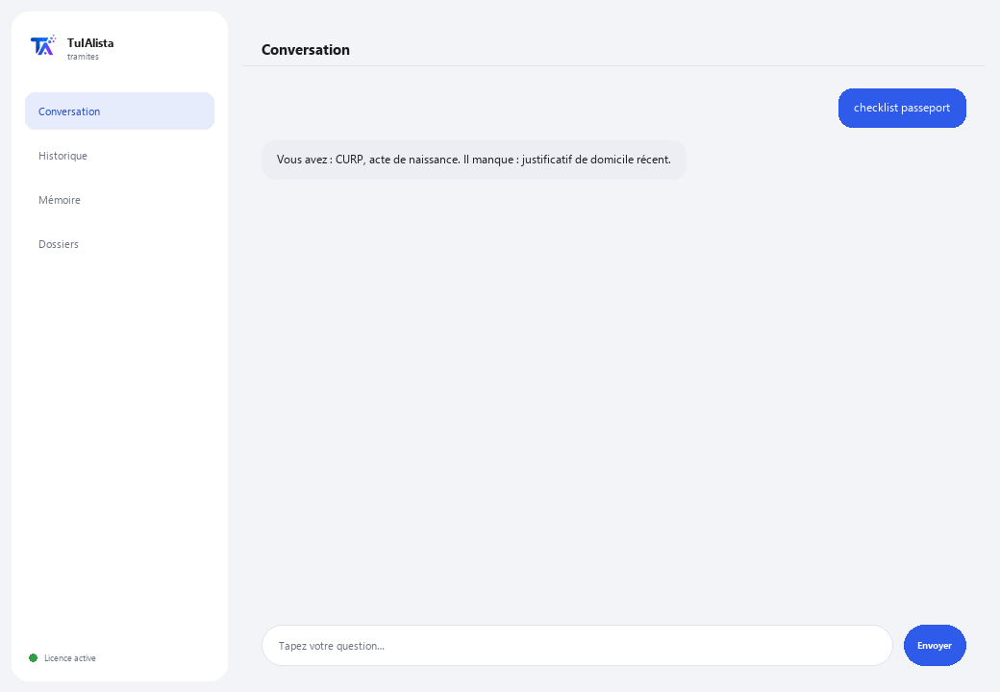

Agent de démarches administratives
Vous guide pas à pas dans les démarches administratives mexicaines et vous dit quels documents vous avez et lesquels vous manquent.
Que résout-il et de quoi avez-vous besoin ?
Une démarche mal préparée signifie du temps perdu, des files d'attente, des refus et parfois des amendes. Cet agent organise vos documents personnels, prépare la check-list de ce que vous avez déjà et ce qui manque, et vous prépare avant de vous rendre à l'administration.
- Vous avez besoin de : votre clé de licence (TIA-XXXX-XXXX-XXXX-XXXX) et du dossier contenant vos documents personnels. Ni Python ni connaissances techniques.
- Premier résultat en moins de 5 minutes : vous installez, activez, choisissez votre dossier et lancez documents pour voir ce qui est classé.
- Vos documents ne quittent jamais votre ordinateur — le classement s'exécute localement.
soporte@tuialista.com ou visitez tuialista.com/soporte — nous répondons généralement le jour même.1 Ce que fait cet agent
Vous lui indiquez le dossier contenant vos documents (pièces d'identité, justificatifs, actes, attestations) et il :
- Les lit et les classe par type (carte d'électeur mexicaine INE, CURP, RFC, justificatif de domicile, acte de naissance, etc.).
- Génère une check-list de la démarche : quelles exigences vous avez déjà et lesquelles manquent.
- Détecte les documents bientôt expirés ou expirés (par exemple, un justificatif de domicile de plus de 3 mois).
- Produit un guide pas à pas de la démarche (administration, exigences, si elle se fait en ligne, coûts et délais approximatifs).
- Répond à vos questions : “de quoi ai-je besoin pour renouveler mon passeport ?”
Résultat : vous arrivez à la démarche avec tout en ordre et sans surprises.
2 Installation (2 minutes)
Pour Windows. Pas besoin d'internet permanent ni de rien envoyer sur le cloud.
Téléchargez l'installateur depuis tuialista.com/descargar (agent Démarches) et ouvrez-le. Il crée un raccourci sur votre bureau avec le logo — pas besoin de Python ni de terminal.
Double-cliquez sur la nouvelle icône. Collez votre clé de licence (reçue par e-mail à l'achat) et cliquez sur Activer. Une coche verte apparaît quand elle est valide.
Sélectionnez le dossier contenant vos documents personnels et cliquez sur Commencer à utiliser l'agent. La prochaine fois, il démarre directement — il se souvient de votre clé et de votre dossier.
3 Comment l'utiliser
L'agent ouvre une fenêtre de discussion, comme une app de messagerie — pas un écran noir de programmeur. Vous écrivez votre commande ou votre question dans le champ de texte en bas, cliquez sur Envoyer (ou Entrée), et la réponse apparaît comme un message, exactement comme sur cette image réelle :

Les commandes suivantes sont les mots que vous pouvez écrire dans ce même champ de texte :
> documentsRésumé de vos documents, leur type détecté et leur statut (valide / bientôt expiré / expiré).
> checklist <démarche>Pour une démarche (ex. passeport, ine, rfc), quelles exigences vous avez déjà (et si l'une est expirée) et lesquelles manquent.
> guide <démarche>Guide complet : administration, documents, si ça peut se faire en ligne, étapes, conseils pour éviter les refus, coûts et délais approximatifs.
> manque <démarche>Seulement ce qui vous manque pour cette démarche, et si vous en avez un expiré.
> expirationsDocuments bientôt expirés ou expirés.
> démarchesCatalogue des démarches que l'agent connaît (passeport, INE, RFC, CURP, permis de conduire, sécurité sociale, acte de naissance, attestation fiscale, signature électronique...).
> question libre ?Écrivez toute question en langage naturel, ex. : puis-je obtenir mon CURP en ligne ?
> quitterTermine la session (fonctionne aussi avec exit).
4 Exemples d'usage courant
Vous préparer pour le passeport
checklist passeport → manque passeport — vous voyez quelles exigences vous avez et ce qui manque avant de prendre rendez-vous.
Guide complet d'une démarche
guide acte
Vérifier les documents bientôt expirés
expirations — vous détectez si votre justificatif de domicile n'est plus valide en raison de son ancienneté.
Une question ponctuelle
de quoi ai-je besoin pour m'inscrire au RFC ?
5 Questions fréquentes
Mes documents sont-ils envoyés sur internet ?
Quels formats accepte-t-il ?
Effectue-t-il la démarche pour moi ou la programme-t-il ?
Génère-t-il des documents officiels ?
Comment classe-t-il mes documents ?
L'information sur les démarches est-elle toujours à jour ?
Dans quelle langue répond-il ?
Lit-il un PDF scanné ?
Puis-je changer le dossier ?
Est-ce de l'information officielle du gouvernement ?
6 Résolution de problèmes
Un .pdf ou .docx ne se lit pas
Une démarche n'apparaît pas
Affiche “0 documents indexés”
Affiche “Licence invalide” ou demande de se reconnecter
“Aucun fournisseur d'IA configuré”
Aucune de ces solutions n'a résolu votre problème ? Écrivez-nous directement — nous serons ravis de l'examiner avec vous.
soporte@tuialista.com ou visitez tuialista.com/soporte — nous répondons généralement le jour même.7 Confidentialité
Vos documents personnels ne quittent jamais votre ordinateur.
- L'agent lit et classe les fichiers localement, sur votre propre appareil. Il ne les envoie à aucun serveur ni ne les partage avec aucune administration.
- Le classement, la check-list et la détection des expirations se produisent sur votre machine.
- La seule chose qui transite par internet est : (1) une vérification que votre licence est active — qui n'inclut pas vos documents —, et (2) lors de la génération d'un guide ou d'une question, un fragment (type de document et votre requête) est envoyé au moteur d'IA pour rédiger la réponse.